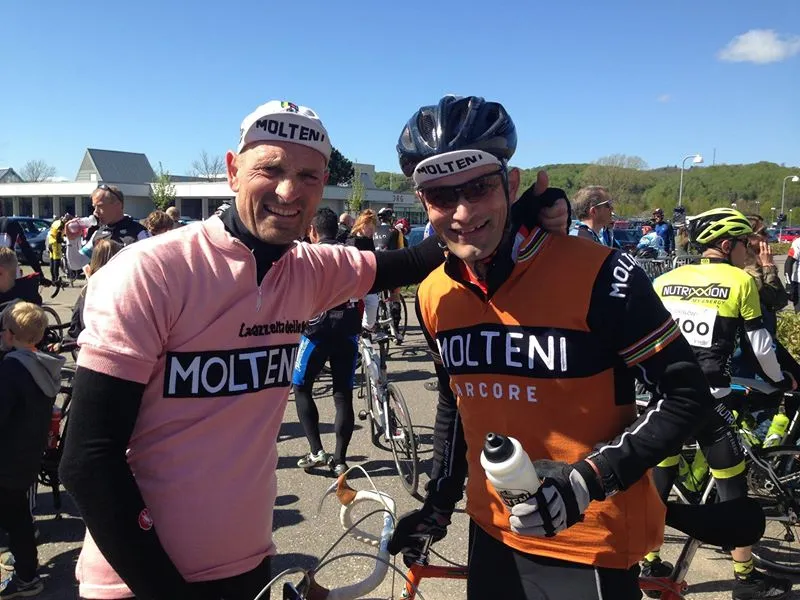

Grejsdalsløbet 2015: Et forsvar af Maglia Rosa

Grane Maaløe og Niels Bjørnsteen stillede op til Grejsdalsløbet 2015 for forsvare Maglia Rosa og vise flaget. De stillede til start på 135 km distancen.
Vejret var noget bedre end sidste år, og Grane og Niels var kommet i et lidt slattent startfelt – og efter første stigning, havde de sammen med Jens Auer fra Peugeot Re-Cycled fået stort hul ned til hovedfeltet.

Grane, Niels og Jens – og et par andre ryttere fra ukeldte carbon-teaams havde et godt samarbejde.
Grejsdalsløbet = Munkebjerg
Ved Munkebjerg måtte Grane efter flot hjælperytterkørsel, hvor han hele tiden beskyttede Maglia Rosa, slippe.
Efter Munkebjerg indgik Squadra Molteni og Peugeot Re-Cycled i et fantastisk samarbejde.
Men på den frygtede Kiddesvej, løb Jens Auer fra Peugeot Re-Cycled tør for franske gear – og Niels Bjørnsteen måtte fortsætte alene.
I det bakkede terræn i Ådalen, fandt Bjørnsteen dog flere alliancer, som gerne ville beskytte Maglia Rosa.
Niels Bjørnsteen kom i mål i 4:33:44, Grane Maaløe i 4:58:07.
Jens Auer fra Peugeot Re-Cycled kom i mål, trods styrt og svære blødninger fra gearskiftefingeren, i tiden 4:50:38 På 180 km distancen stillede Per Hansen op for det belgiske landshold.
Per var godt med helt fremme – men måtte desværre stå af efter 120 km med et maveonde.
Grejsdalsløbet er som altid en klassiker, og helt igennem et fantastisk løb.